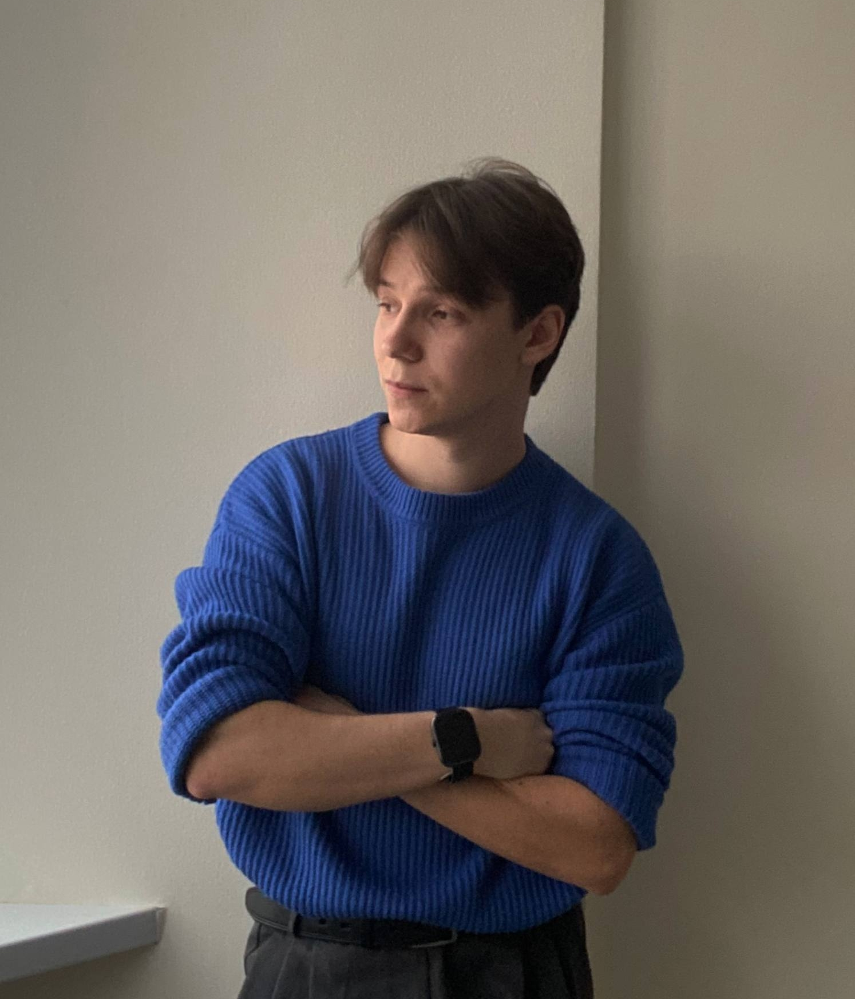

|
Dmitry Kuzmin
I'm a 4-year undergraduate student pursuing a B.Sc. in Information Systems
and Technologies at PSUTI, advised by
Prof. Natalia I. Limanova.
I'm also a Research Engineer at the Research Institute of
Neuroscience, directed by Dr. Alexander V. Zakharov, where I work on machine learning for analyzing neural and
physiological signals. Most of my work involves extracting and analyzing features from biosignals to develop algorithms for
interpreting physiological processes.
Email /
Linkedin
/
Github
|

|
Research Projects
My main research interests includes Computer Vision, Deep Learning, and Machine Learning.
I'm interested in exploring new neural network methods and architectures and applying them to practical problems.
|
|